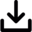

Описание
YouTube-DLG (YouTube-dl GUI) - это кроссплатформенный продукт, который призван облегчить Вам жизнь при работе в интренте. С помощью него Вы сможите загружать видео со всех популярных площадок в интернете для просмотра видеоконтента. YouTube-DLG поддерживает загрузку видео в самых разных форматах (в том числе и извлечение звука из видео). Он абсолютно бесплатен и его код полностью открыт (Распространяется по лицензии Unlicense), переведён на русский язык
{kind=link}
{kind=link}
Загрузки
| Платформа | Тип | Закгрузка |
|---|---|---|
 Windows Windows |
Установщик |  Загрузить |
| Портативная версия | Загрузить | |
 Arch Arch |
Установщик | Загрузить |
 Ubuntu Ubuntu |
Установщик | Загрузить |
 Slackware Slackware |
Установщик | Загрузить |
 openSUSE openSUSE |
Установщик | Загрузить |
 PyPi PyPi |
Установщик | Загрузить |
| Формат | Тип | Получить |
 zip zip |
Исходный код | Получить |
 tar tar |
Исходный код | Получить |
Установка
Для Windows
- Скачайте установочный файл
- Запустите установочный файл программы от имени Администратора
- Установите программу следуя интсрукциям установщика
- Удалите установочный файл программы
PyPi (Linux)
Выполните команду в терминале:
$ pip install youtube-dlg
Source (Linux)
Выполните команду в терминале:
$ python setup.py install